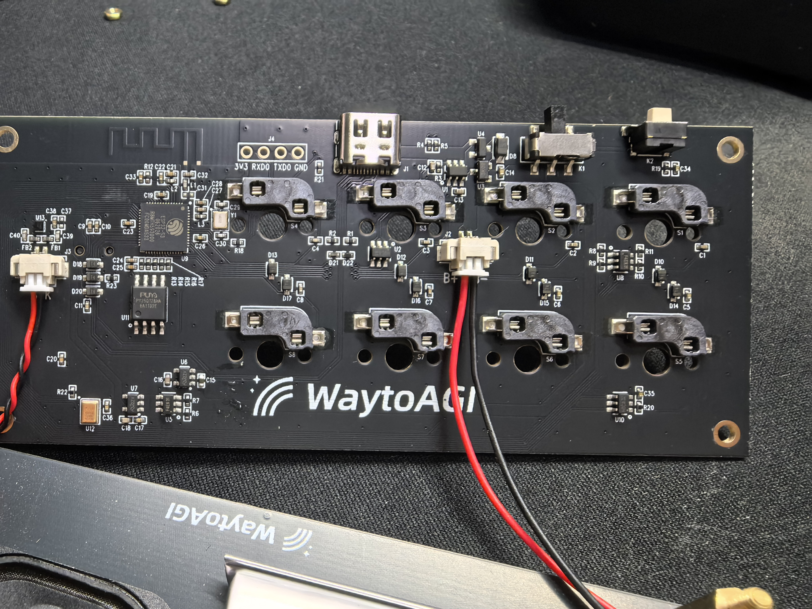
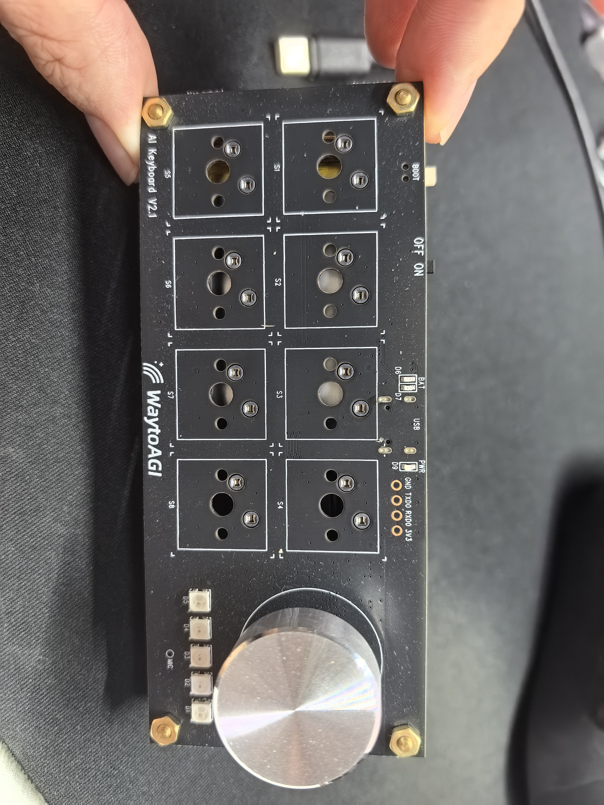
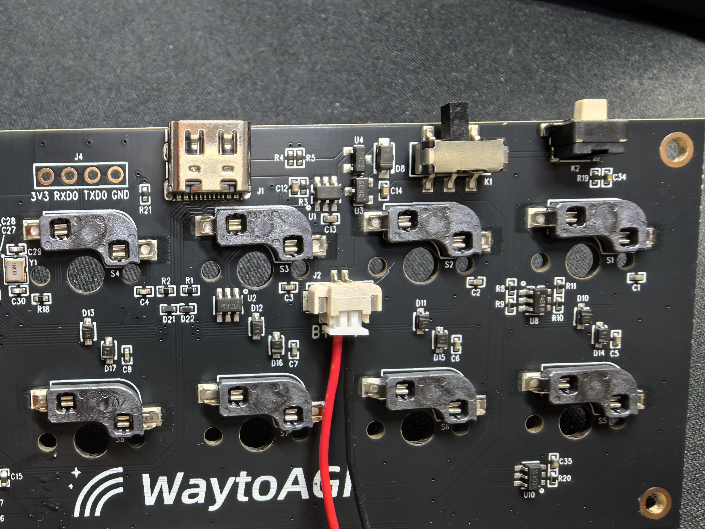
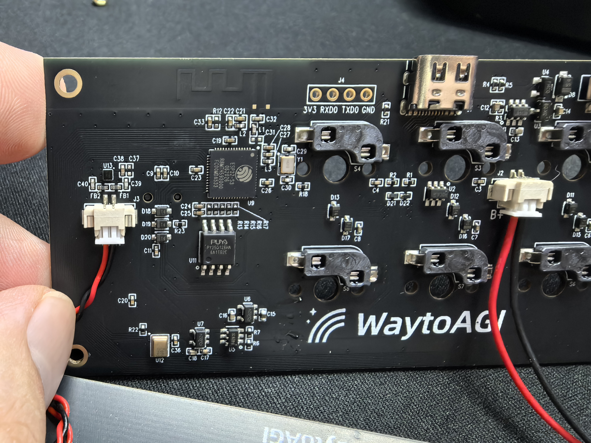
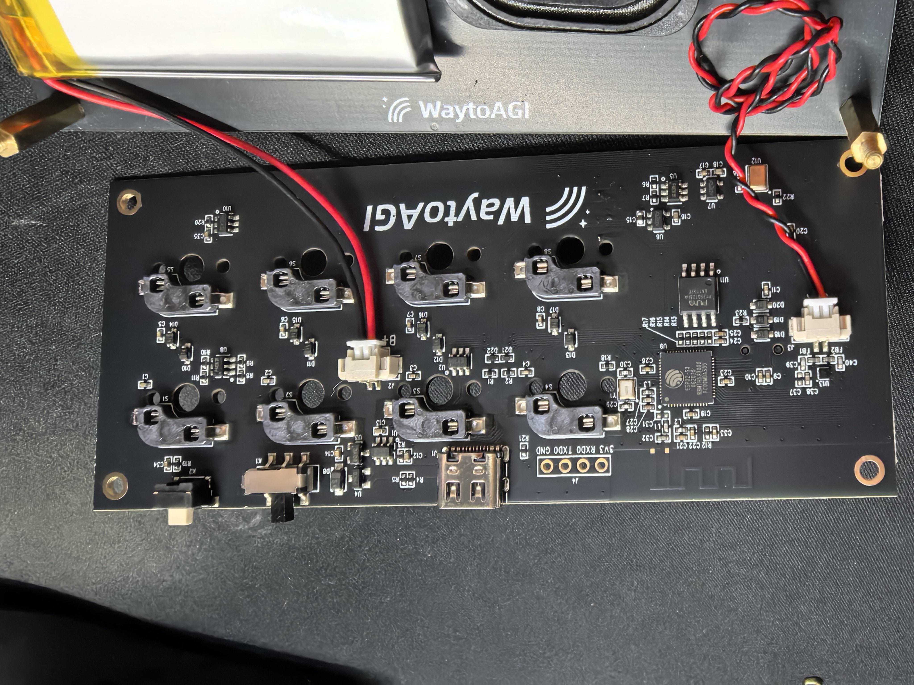
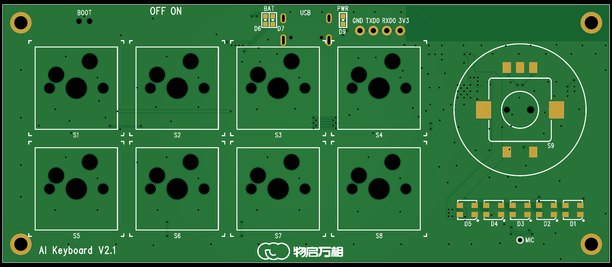
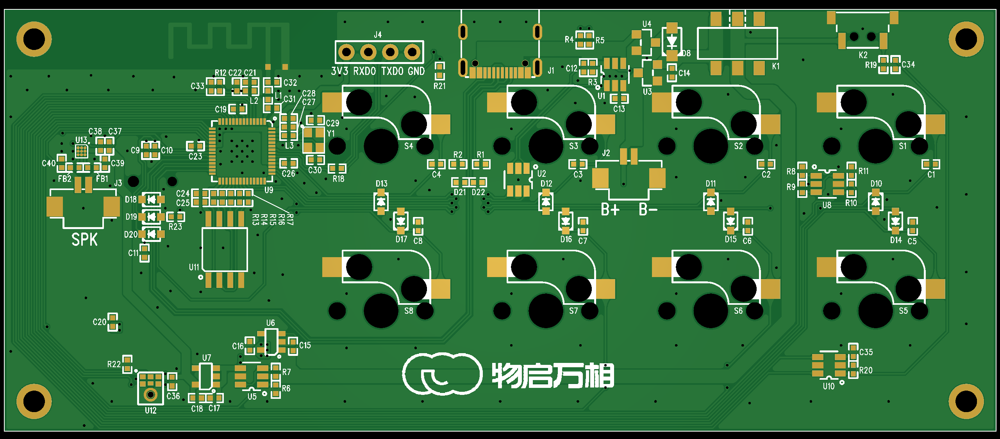

能“按”和“拧”
8 个独立按键，加一个可旋转、可按压的编码器。程序可以自由定义每个动作。
这不是一份让你背电路的说明书。我们先从“它在哪里、能做什么、怎样安全使用”开始，再逐步理解 GPIO、音频、灯光、电池和烧录。

它把输入、灯光、声音、电池和无线能力集中在一块板上，适合做语音助手、AI 快捷键、智能控制器和多模态交互原型。
8 个独立按键，加一个可旋转、可按压的编码器。程序可以自由定义每个动作。
板载数字麦克风，外接扬声器并由功放驱动，适合语音 AI 交互。
ESP32-S3 自带 Wi-Fi 和 BLE，通过板载 PCB 天线通信。
5 颗串联 RGB 灯，加一颗独立绿色状态灯，可显示录音、思考和错误状态。
正面是你日常操作的区域；背面是主控、电源、音频和连接器所在的元器件区。点击下方按钮切换。




这些是 ECAD/PCB 快照，不是装配实拍，也不能代替最终制造文件。它们适合用来核对丝印、器件位置和线路分区。


先记住三个词：ESP32-S3 负责计算，Flash 长期保存内容，PSRAM 是运行时的临时工作区。
读取按键与旋钮、控制灯光、处理音频、连接 Wi-Fi/BLE，并运行你的固件逻辑。
断电后仍保存固件和资源。本板容量为 16 MB。
运行时临时放数据，断电后内容消失。本板为 8 MB。
输入让板子知道你做了什么；输出让板子用灯光和声音回应你。实际业务动作由训练营项目定义。
S1～S8 是独立低有效输入，不是矩阵键盘，因此可以同时检测多个键。
S1=GPIO2S2=47S3=38S4=41S5=1S6=6S7=7S8=48A/B 两相信号错开变化，程序据此判断旋转方向；向下按压则是 S9。
A=GPIO17B=GPIO16S9=GPIO185 颗 WS2812 串联，共用一条数据线；另有一颗独立绿色状态灯。
RGB=GPIO12绿灯=GPIO42顺序=GRB声音被数字化后，经 I2S 信号送入 ESP32-S3。
BCLK=9WS=10DIN=11ESP32-S3 输出数字音频，板上 MAX98357A 路径负责驱动外接扬声器。
BCLK=14WS=13DOUT=15GPIO21 只能说明“某个输入动作了”，不能告诉你具体是哪一个。唤醒后仍要重新读取独立输入。
KEY_WAKE=21低有效GPIO8 不是单独的“灯带开关”。它同时影响 RGB 灯、麦克风和扬声器，软件必须协调三个消费者。
GPIO5 拉高使能分压，再从 GPIO4 / ADC1_CH3 读取约为 VBAT/2 的电压。
GPIO40 为低表示外部供电存在；此时 GPIO39 高=充电中，低=充满。
板上没有专用 fuel gauge。GPIO4 读到的是端电压，电压还会受负载、温度和电池状态影响，因此百分比需要项目自己校准估算。
这块板的 BOOT 电路不是普通 ESP32 开发板上的“裸 GPIO0 按键”。请按实板确认过的流程操作。
输入“按键、LED、USB、GPIO12”等关键词即可筛选。数字来自当前板级合同，不从通用 ESP32 pinout 猜测。
| 类别 | 板上名称 / 功能 | GPIO | 方向或有效电平 | 新手说明 |
|---|---|---|---|---|
| 输入 | S1 / KEY1 | GPIO2 | 低有效 | 主按键 1 |
| 输入 | S2 / KEY2 | GPIO47 | 低有效 | 主按键 2 |
| 输入 | S3 / KEY3 | GPIO38 | 低有效 | 主按键 3 |
| 输入 | S4 / KEY4 | GPIO41 | 低有效 | 主按键 4 |
| 输入 | S5 / KEY5 | GPIO1 | 低有效 | 不是 GPIO0 |
| 输入 | S6 / KEY6 | GPIO6 | 低有效 | 主按键 6 |
| 输入 | S7 / KEY7 | GPIO7 | 低有效 | 主按键 7 |
| 输入 | S8 / KEY8 | GPIO48 | 低有效 | 主按键 8 |
| 输入 | 编码器 A / KEY-A | GPIO17 | 相位输入 | 与 B 相一起判断方向 |
| 输入 | 编码器 B / KEY-B | GPIO16 | 相位输入 | 不是普通长按键 |
| 输入 | S9 / 编码器按压 | GPIO18 | 低有效 | 按下旋钮 |
| 输入 | KEY_WAKE | GPIO21 | 低有效 | 汇总唤醒，不能识别具体来源 |
| 灯光 | LED_DIN / 5 颗 WS2812 | GPIO12 | 输出 / GRB | 5 颗串联，共用一条数据线 |
| 灯光 | 独立绿色状态灯 | GPIO42 | 高有效 / PWM | 与 RGB 灯不同 |
| 电源 | PWR_EN / 共享外设电源 | GPIO8 | 高有效输出 | 同时影响 LED、麦克风和扬声器 |
| 电池 | SEN_EN / 电池采样使能 | GPIO5 | 高有效输出 | 测量前拉高 |
| 电池 | SEN_VBAT | GPIO4 | ADC1_CH3 | 读到约为 VBAT/2 |
| 电源 | SEN_VIN / 外部供电检测 | GPIO40 | 低=存在 | 先判断它，再解释充电状态 |
| 充电 | SEN_CHRG | GPIO39 | 高=充电，低=充满 | 仅外部供电存在时有效 |
| USB | USB D- | GPIO19 | 原生 USB | 不要随意复用 |
| USB | USB D+ | GPIO20 | 原生 USB | 不要随意复用 |
| BOOT | BOOT0 / 下载入口 | GPIO0 | 专用 | 不是 S5 或产品按键 |
| 麦克风 | MIC BCLK | GPIO9 | 时钟输出 | I2S 麦克风 |
| 麦克风 | MIC WS | GPIO10 | 时钟输出 | I2S 麦克风 |
| 麦克风 | MIC DATA IN | GPIO11 | MCU 输入 | 掉电转换时保持浮空 |
| 扬声器 | SPK BCLK | GPIO14 | 时钟输出 | I2S 扬声器路径 |
| 扬声器 | SPK WS | GPIO13 | 时钟输出 | I2S 扬声器路径 |
| 扬声器 | SPK DATA OUT | GPIO15 | MCU 输出 | 送往 MAX98357A 路径 |
| 调试 | J4 RXD0 / U0RXD | GPIO44 | MCU 接收 | 外接串口 TX 应接这里 |
| 调试 | J4 TXD0 / U0TXD | GPIO43 | MCU 发送 | 外接串口 RX 应接这里 |
| 保留 | Flash / PSRAM 总线 | GPIO26–37 | 板载占用 | 不得当普通空闲 GPIO 使用 |
从最容易验证的输入开始，逐步增加灯光、供电、音频和联网。每一步都先确认“看得见的成功现象”。
读懂输入、电平和串口日志。
加入消抖、组合键和旋转方向。
控制状态灯和 5 颗 RGB 灯。
读取电压、USB 和充电状态。
理解 I2S、采样率和音频缓冲。
Wi-Fi + 语音服务 + 灯光状态机。
很多问题不是代码难，而是使用了旧版资料、通用 ESP32 教程或把共享资源理解成独立资源。
依次确认板型、USB 数据线、供电和电脑端口列表；然后保持开机，再短按并松开 BOOT。若仍失败，记录端口变化和日志，不要未经确认退回“按住上电”的旧流程。
灯的全黑帧只改变颜色数据，不会关闭 GPIO8 共享电源。运行中要关电，必须先停止所有 LED、麦克风和扬声器活动，再按安全顺序处理。
本板没有专用电量计。端电压会随负载、温度和电池状态变化，百分比算法必须由项目校准，单次 ADC 读数不能直接当准确剩余容量。
不能。照片适合确认位置、封装和部分丝印，但完整型号、参数与是否装配要以当前批次 BOM、装配资料和测量为准。
工程上，“不知道”不是失败。把未知项写清楚，才能避免把猜测复制进代码和课程。
当前资料没有可追溯的最终物料清单，不能逐颗确定元器件参数。
D19/D20、Flash 替代料以及未反映在丝印上的差异仍需实物或 BOM 确认。
缺少 GPIO8 上电波形、各种工作状态电流和跨批次最短稳定时间。
缺少 Gerber、钻孔、贴片坐标、装配图以及 DRC/ERC 报告。